H1Ванная с четырьмя коллекциями увеличит долю заявок на расчёт от частных покупателей.
- Метрика
- Конверсия в заявку с ролью «Делаю ремонт»
- Проверка
- A/B-тест: сцена против статичной галереи из 4 фото
- Успех
- Рост конверсии, значимый на 95 %
Решения
Производство
Отвечает Сергею и Марине: «кому доверять?»
Первый экран мог бы быть баннером со скидкой. Я сделала его цехом: тёмная сцена, плиты уходят в перспективу, из глубины идёт оранжевое свечение печи. Это единственное место на сайте с ярким оранжевым, поэтому оно запоминается.
Под заголовком при прокрутке по очереди всплывают три факта: 1 200 °C обжига, меньше 0,5 % водопоглощения и 70 000 м² на складе. Это не обещания, а цифры, которые можно проверить.
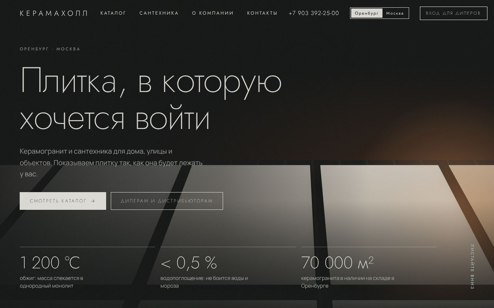
Улица · 20 мм
Отвечает Марине: «как это будет выглядеть у меня?»
Уличный керамогранит 20 мм трудно продать по фото: на снимке он выглядит как обычная плитка. А главное в нём толщина. Его кладут на песок или гравий, по нему ездят, он не скользит после дождя.
Поэтому плиты собираются прямо в сцене: одна встаёт перед домом с освещёнными окнами, по бокам поднимаются ещё восемь, и появляются карточки коллекций Alder biege и Jambo. Сцена целиком нарисована на CSS и весит меньше одной фотографии.
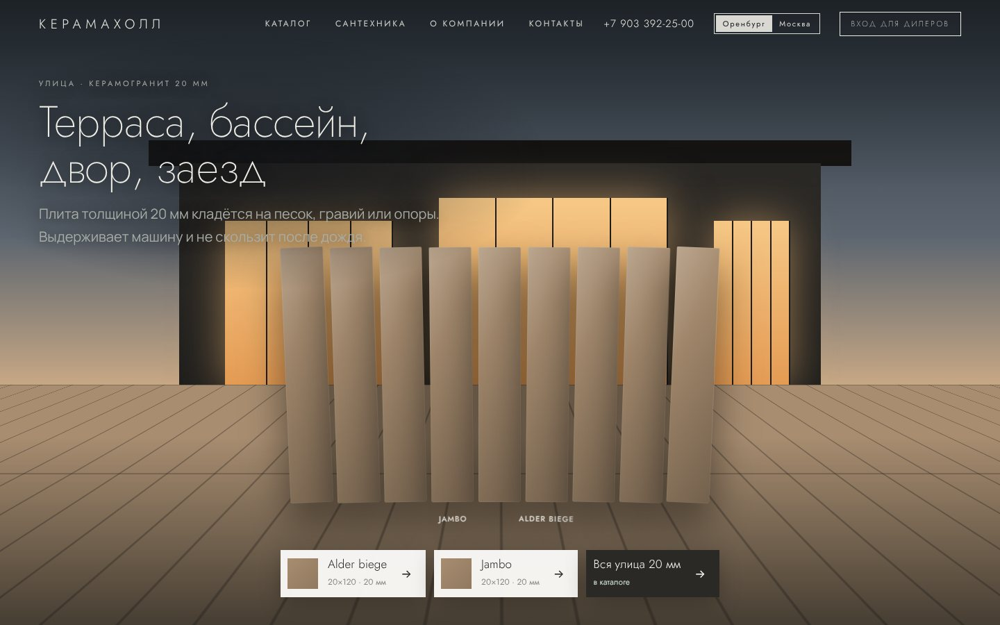
Дом в 3D
По комнате на роль: Дмитрию, Алексею, Сергею
Камера входит в дом, идёт по коридору, заглядывает в гостиную и останавливается в ванной. Комнаты собраны из CSS-плоскостей в 3D, на пол и стены ложится камень выбранной коллекции со швами точного формата.
Каждая комната работает на свою роль: в коридоре дистрибьюторам говорят о складе в Москве, в гостиной дизайнерам предлагают 3D-проект, в ванной строителям обещают одну партию на объект. Попробуйте сами: потяните ползунок или нажмите ▶.
Ванная
Снимает главный страх Марины: «а вдруг не так»
Когда камера останавливается в ванной, прокрутка продолжает работать, но теперь меняет плитку на стенах. Посетитель видит одну и ту же комнату в четырёх коллекциях: тёплой Hana, голубой Water fall, светлой Tiana и глубокой Enrique black. Мебель та же, меняется только плитка, и разницу видно сразу.
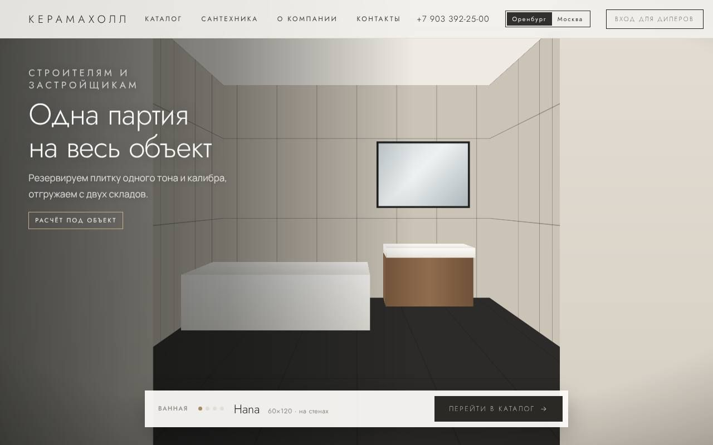
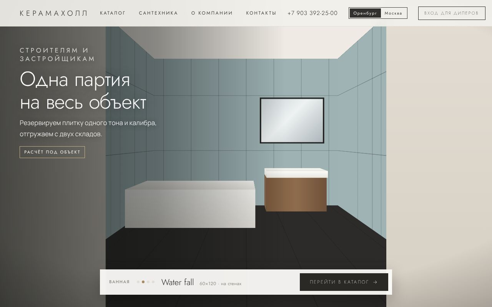
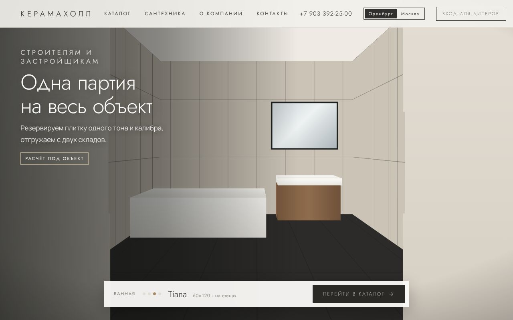
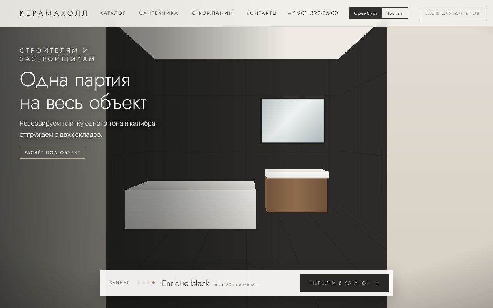
Дизайны
Вдохновение для Марины и Алексея
Пять интерьеров, по одной коллекции в каждом, сменяют друг друга при прокрутке. Внизу бежит полоса прогресса, в углу идёт таймкод от 00:00 до 00:24. На каждом кадре точка с названием плитки, как метка в журнале, а фон текстовой колонки окрашен в тон коллекции.
Перед фильмом стоит заявка «Расчёт за вас». Роль выбирается одним нажатием: ремонт, дизайнер, строитель или дилер.
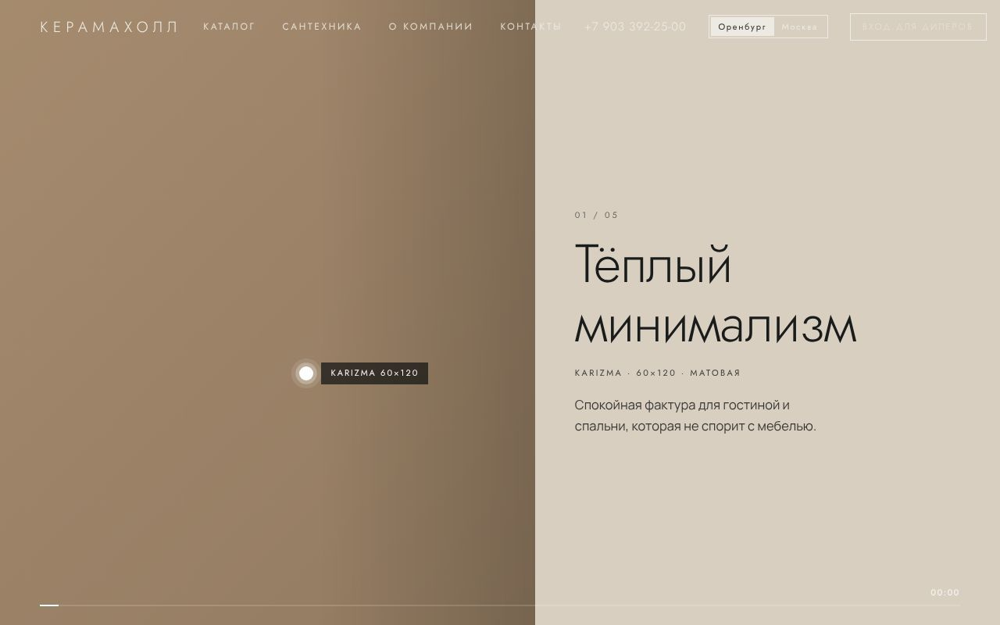
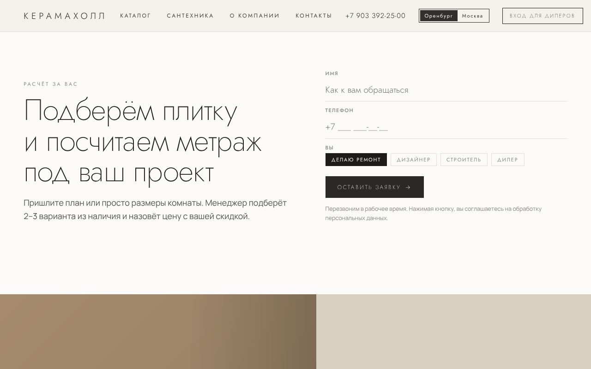
Москва · дистрибуция
Отвечает Дмитрию: «сколько я заработаю?»
Шоурума в Москве нет, и страница говорит об этом прямо. Вместо обещаний дилер получает калькулятор: вводит розничную цену с витрины и сразу видит свою закупочную. Переключатель самовывоза меняет скидку с 35 на 40 %. Ниже работающая копия калькулятора.
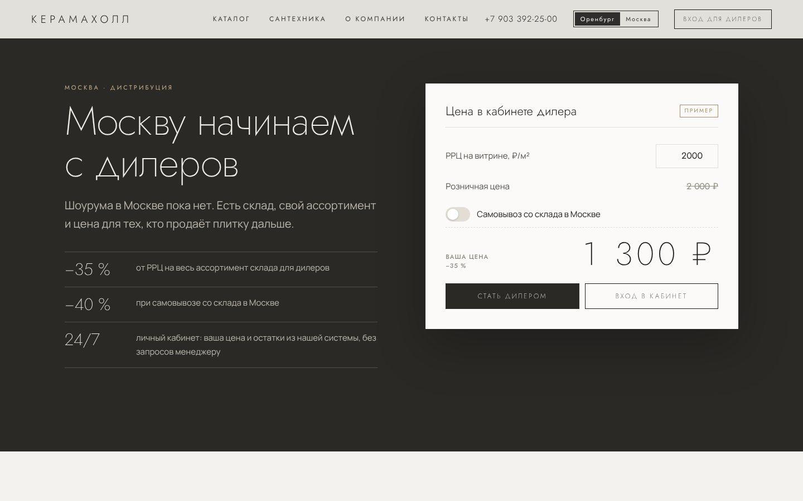
Гипотезы и метрики
Каждое решение — ставка, которую нужно проверить на живых людях. Вот что я бы измеряла в первые два месяца после запуска.
H1Ванная с четырьмя коллекциями увеличит долю заявок на расчёт от частных покупателей.
H2Калькулятор приведёт больше дилеров, чем текст с условиями.
H3Длинные сцены на телефоне повышают риск ухода до формы.
H4Переключатель ролей на первом экране сократит путь дизайнера с 18,6 экрана до одного клика.
scene_progress {scene: production | street | house | film, progress: 25 | 50 | 75 | 100}bath_collection {collection: hana | water_fall | tiana | enrique_black}role_select {role: repair | designer | builder | dealer, place: hero | form}dealer_calc {rrp, pickup: true | false}cta_click {cta, section, screen}lead_submit {form: request | dealer | subscribe | exit_popup, role}
Визуальный язык и реализация
Ориентир — редакционная подача дорогих плиточных брендов: много воздуха, волосяные линии, плитка как главный герой кадра. Тёмные сцены с тёплым светом чередуются со светлыми разворотами, чтобы 22 экрана не утомляли.
#F4F2EE#2A2926#111312#A88B62#E9864AЗаголовки · Jost 200
Плитка 60×120
Текст · Manrope 400
Тонкий геометрический гротеск в заголовках напоминает чертёж раскладки. Manrope держит читаемость на мелких кеглях и в цифрах цен. Кнопки квадратные, без скруглений, как край плиты.
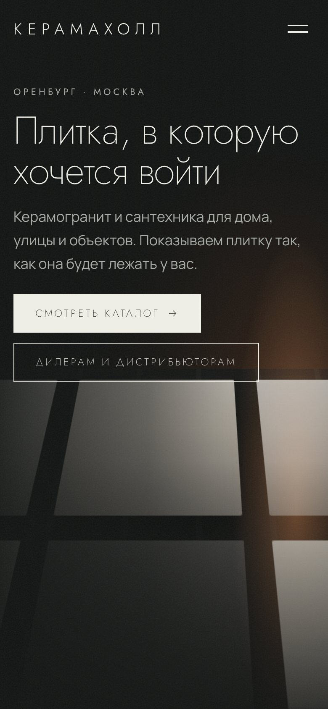
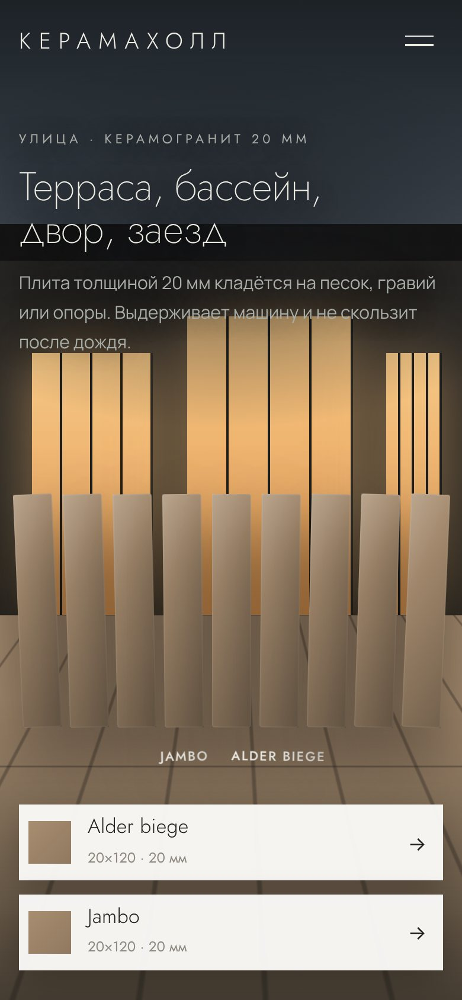
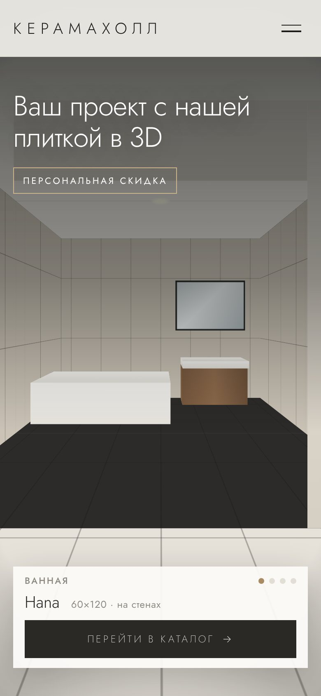
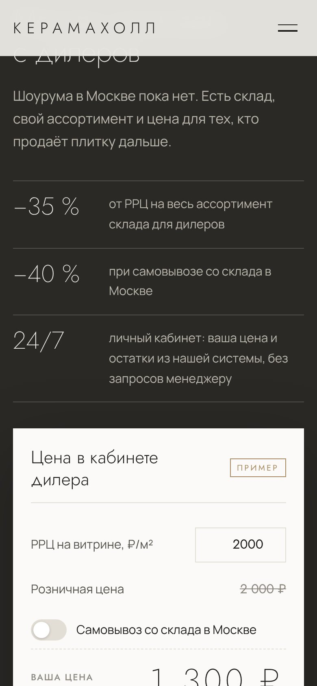
Прокрутка управляет сценой. Закреплённые блоки занимают от трёх до пяти экранов. Скрипт переводит положение прокрутки в прогресс от 0 до 1 и по нему двигает камеру, плиты и подписи.
Камень одним полотном. Фото фактуры ложится на стены и пол целиком, поверх идут швы формата 60×120, 20×120 или 100×100. Если фото не загрузилось, остаётся градиент в тоне коллекции, и сцена не разваливается.
Дальше